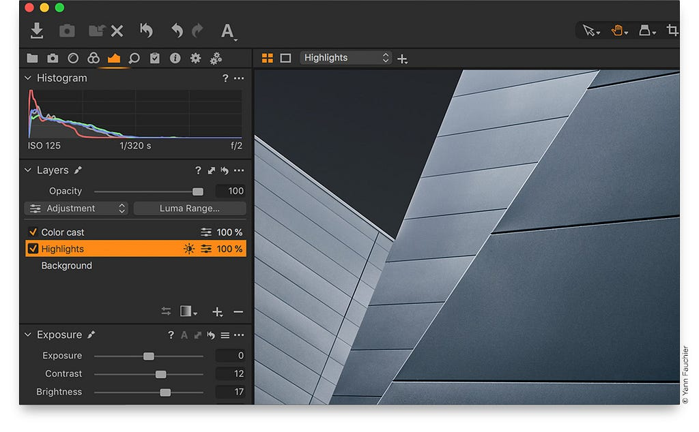
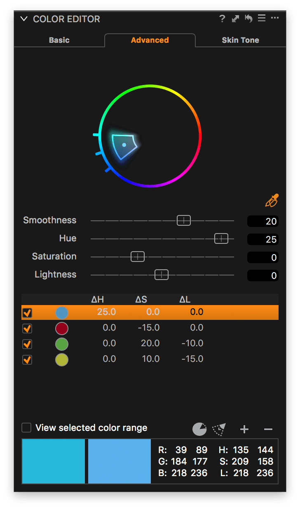
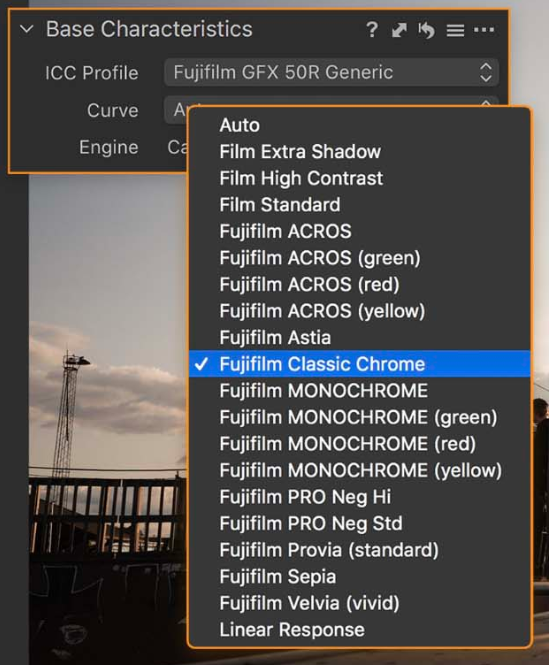
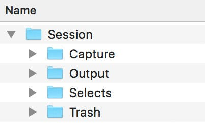

Introduction
I use Capture One 20 to edit all my photos, both my old ones taken with Nikon D70, Nikon D90, Panasonic G7/GH5, and Sony A7II and glorious new photos taken with my Fuji cameras.
Capture One has a special Fuji version, which is cheaper and only works with Fuji cameras. They offer a similar version for Sony. I own a full license for the Capture One Pro 20, which handles all cameras, paid once, but they also offer a subscription-based version, similar to Lightroom.
After years with Lightroom — why change?
In mid-2019 my Lightroom catalog contained approx. 350.000 images, the first taken back in 2000. I never deleted anything and due to some failed attempts at re-organization, I’d imported lots of photos multiple times. It was a mess, a huge, overwhelming mess. Navigating this catalog was a nightmare as well so I started looking at the alternatives, but few solutions had good catalog performance and similar features, like rich metadata handling AND post-processing abilities. They were either good at metadata handling or mostly focused on photo processing (like Luminar), not both.
I’d just sold all my old photo gear and bought a Sony A7II, but trying my neighbors Fujifilm X-T2 made me switch completely to Fuji, which Lightroom didn’t handle very well, so another nail in the coffin for LR.
At the same time, Adobe did some strange changes to their subscription-based Lightroom plan, like suddenly doubling the cost for some users or telling owners of a license to old software that they might be sued if they tried to use their old software. They also seemed to focus mostly on their cloud-based solutions and lots of longtime Adobe users started looking elsewhere. All in all, they seemed to handle the whole thing rather poorly and this also strengthened my desire to find some non-Adobe alternative.
I looked at Luminar, and even bought a license for Luminar 3, but it didn’t have a catalog function at all. Later I tested Luminar 4, which had catalog features, but some of the editing features didn’t feel right, like switching out the sky in one click and adding artificial sun flares. Trying to catalog my huge amount of photos caused the software to crash after a few days of chewing through the files and when I tried to start Luminar again it never recovered.
I saw some youtube videos related to Capture One and after a few tests using the Fuji-only express version of Capture One I abandoned Adobe and went all-in on Capture One.
Ironically, the last time I started Lightroom Adobe had patched it and now it worked much faster in my enormous catalog, but it was too little, too late.
Untangling about 20 years of bad data management
I’m going to write a separate post about how I manage my photo collection, but in short, I use Capture One sessions, one for each photo event and all events sorted by year, but have planned a Master Catalog, which will contain only the selects from the separate sessions. When I consider a session to be done, I’ll import the selects into the Master Catalog and then move the session into an Archive-folder. Everything is stored on a Synology NAS, which is backed up to another local Synology NAS in addition to a cloud-based backup of everything.
I’ve imported old photos by year into sessions and are going to work through each year, sorting photos into groups/collections based on event, deleting bad ones, adding metadata, and rating as I go. Hopefully, I can export those collections into separate sessions somehow later, but as I’ll go into details below, Capture One has a few missing features and performance issues when it comes to session and catalog handling. Even if there are a few hiccups performance-wise, Capture One has nice organizing features and I feel I finally have a chance to get control over my enormous collection of photos.
What I like #1 — Small adjustments
In Lightroom I found small adjustments in a slider made huge changes to my photos. It’s probably a common problem with an inexperienced user like myself coming into photo editing software to overuse tools like shadow- and highlight-recovery, clarity, and sharpness. So the problem is certainly a user error, but I feel Capture One makes it easier to make small adjustments and keep my photos from looking over-processed than Lightroom.
In short, Capture One makes me feel like I’m still working with photography and not digital art.
What I like #2 — Layers
Capture One has great support for layers, making it easy to adjust only parts of the image and keep the adjustments separate. After lots of adjustments, you can still remove or reduce or increase the opacity of a given layer to fit the final goal.
What I like #3 — Color editor

The color editor in Capture One is more advanced than the one found in Lightroom. For a nice introduction to the color, editor go here.
What I like #4 — Customizable user interface
You can customize the Capture One interface to better fit your own needs. I especially like defining my own panel with the tools I use the most, in the order of how I edit my photos so my post-processing workflow is manifested in the editing software.
What I like #5 — Support for Fuji film simulations

I’ve written a separate post about Fuji film simulations and these are also found and applied by Capture One on import, which is a great starting point for additional processing.
What I like #6 — Tutorials on YouTube
At least in the past months, there has been new official Capture One related live streams or youtube videos every week. There are already lots of tutorials available on PhaseOne’s (the publisher of Capture One) website, but the live streams with guests are on youtube are especially nice and is a great way of building a community around a piece of software.
What I like #7 — Helps me focus on producing a few good photos

That might sound strange, but when you use Capture One sessions it will build a folder structure with one folder for all your imported photos, on for trash, one for output, and one for selects. The folder called selects are meant for the few, the best of the bunch and they’re kept separately. This mindset has made me more aware of sorting out the really good photos and setting those aside. If I take 1000 photos at an event I want only 10–15 in my selects folder (ok, sometimes a few more 😉 ) — that’s where to gold is.
I also like that my finished photos are processed and the produced JPEGs, or TIFs, are placed in the output folder. It keeps the folder structure simple.
What I don’t like
My wishlist
In conclusion
I love Capture One for the editing features. I almost love the organizing features if the performance can be fixed and add a few features for organizing & automation. Capture One has been a perfect fit for my transition to a more mindful photography mindset, with a better focus on producing a few good photos. There seems to be a nice community among the Capture One users.
Further reading/watching
Capture One Facebook resources
Originally published at http://weholt.org.